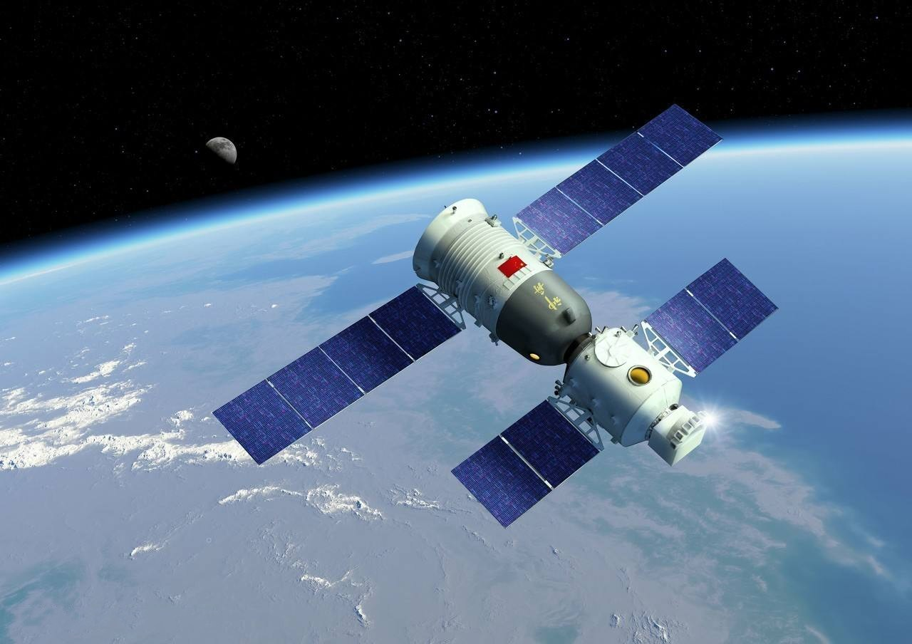

首页>中国航天事业
中国航天事业的空间应用：
1、卫星遥感
中国从二十世纪七十年代初期开始利用国内外遥感卫星，开展卫星遥感应用技术的研究、开发和推广工作，在气象、地矿、测绘、农林、水利、海洋、地震和城市建设等方面得到了广泛应用。
2、卫星通信
中国从二十世纪八十年代中期开始利用国内外通信卫星，发展卫星通信技术，以满足日益增长的通信、广播和教育事业的发展需求。在卫星固定通信业务方面，全国建有数十座大中型卫星通信地球站，联结世界180多个国家和地区的国际卫星通信话路达2.7万多条。
3、卫星导航定位
中国从二十世纪八十年代初期开始利用国外导航卫星，开展卫星导航定位应用技术开发工作，并在大地测量、船舶导航、飞机导航、地震监测、地质防灾监测、森林防火灭火和城市交通管理等许多行业得到了广泛应用。
中华人民共和国的航天事业起始于1956年。中国于1970年4月24日发射第一颗人造地球卫星(见"东方红"1号)，是继苏联、美国、法国、日本之后世界上第5个能独立发射人造卫星的国家。
中国发展航天事业的宗旨是:探索外太空，扩展对地球和宇宙的认识;和平利用外太空，促进人类
文明和社会进步，造福全人类;满足经济建设、科技发展、国家安全和社会进步等方面的需求，提高
全民科学素质，维护国家权益，增强综合国力。中国发展航天事业贯彻国家科技事业发展的指导方
针，即自主创新、重点跨越、支撑发展、引领未来。